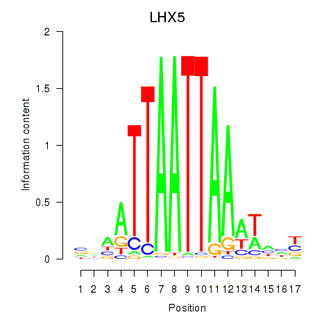
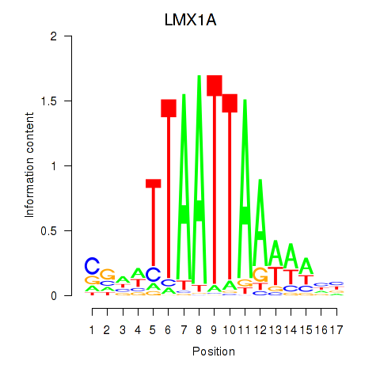
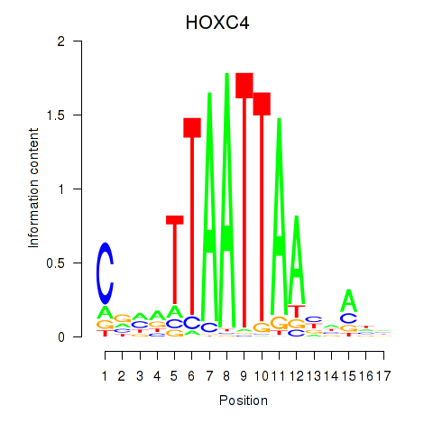
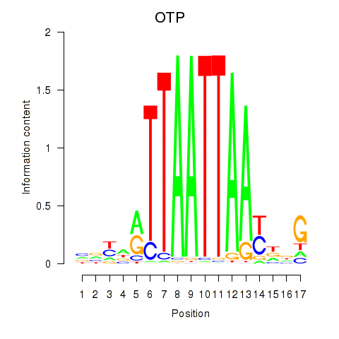
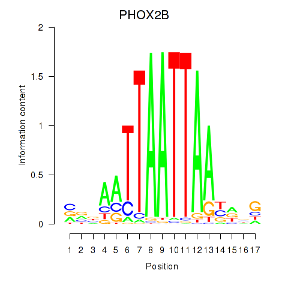
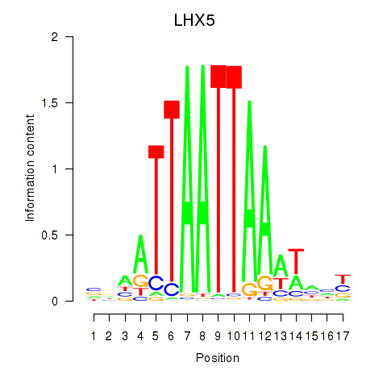
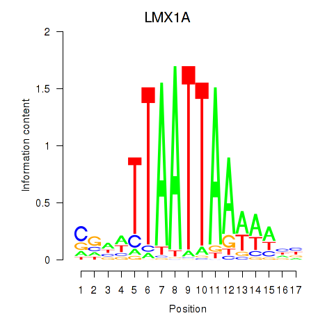
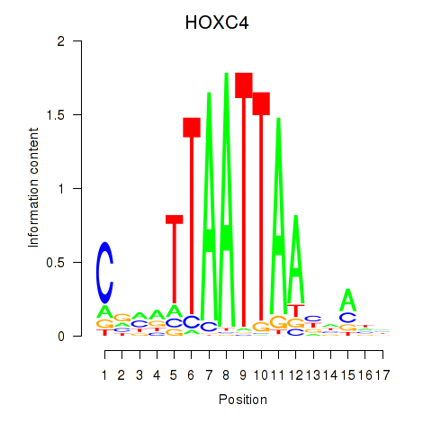
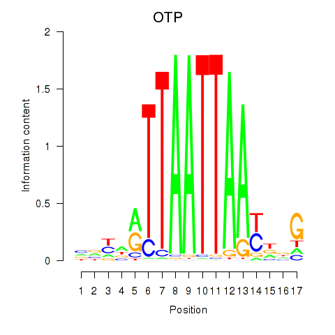
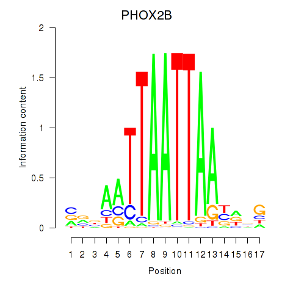

Motif ID: OTP_PHOX2B_LHX1_LMX1A_LHX5_HOXC4
Z-value: 0.402
 









Transcription factors associated with OTP_PHOX2B_LHX1_LMX1A_LHX5_HOXC4:
| Gene Symbol | Entrez ID | Gene Name |
|---|---|---|
| HOXC4 | ENSG00000198353.6 | HOXC4 |
| HOXC4 | ENSG00000273266.1 | HOXC4 |
| LHX1 | ENSG00000132130.7 | LHX1 |
| LHX5 | ENSG00000089116.3 | LHX5 |
| LMX1A | ENSG00000162761.10 | LMX1A |
| OTP | ENSG00000171540.6 | OTP |
| PHOX2B | ENSG00000109132.5 | PHOX2B |
![](http://string-db.org/api/image/network?network_flavor=evidence&limit=0&species=9606&caller_identity=MARA&identifiers=9606.ENSP00000264708%0D9606.ENSP00000322823%0D9606.ENSP00000357040%0D9606.ENSP00000371634%0D9606.ENSP00000280191%0D9606.ENSP00000347978%0D9606.ENSP00000401678%0D9606.ENSP00000294702%0D9606.ENSP00000312411%0D9606.ENSP00000321246%0D9606.ENSP00000312702%0D9606.ENSP00000377747%0D9606.ENSP00000340507%0D9606.ENSP00000346810%0D9606.ENSP00000345826%0D9606.ENSP00000345175%0D9606.ENSP00000355430%0D9606.ENSP00000393571%0D9606.ENSP00000332931%0D9606.ENSP00000324857%0D9606.ENSP00000382707%0D9606.ENSP00000386653%0D9606.ENSP00000289547%0D9606.ENSP00000295902%0D9606.ENSP00000227918%0D9606.ENSP00000327975%0D9606.ENSP00000406925%0D9606.ENSP00000324827%0D9606.ENSP00000319601%0D9606.ENSP00000453153%0D9606.ENSP00000373702%0D9606.ENSP00000472778%0D9606.ENSP00000295269%0D9606.ENSP00000222399%0D9606.ENSP00000321988%0D9606.ENSP00000329738%0D9606.ENSP00000260323%0D9606.ENSP00000337907%0D9606.ENSP00000223428%0D9606.ENSP00000297954%0D9606.ENSP00000325078%0D9606.ENSP00000265724%0D9606.ENSP00000301175%0D9606.ENSP00000345151%0D9606.ENSP00000332256%0D9606.ENSP00000284049%0D9606.ENSP00000254853%0D9606.ENSP00000265806%0D9606.ENSP00000349577%0D9606.ENSP00000327821%0D9606.ENSP00000471475%0D9606.ENSP00000357008%0D9606.ENSP00000259371%0D9606.ENSP00000419718%0D9606.ENSP00000454664%0D9606.ENSP00000425556%0D9606.ENSP00000256652%0D9606.ENSP00000368190%0D9606.ENSP00000420610%0D9606.ENSP00000420616%0D9606.ENSP00000329553%0D9606.ENSP00000369573%0D9606.ENSP00000449597%0D9606.ENSP00000316959%0D9606.ENSP00000353165%0D9606.ENSP00000403984%0D9606.ENSP00000379669%0D9606.ENSP00000358931%0D9606.ENSP00000463483%0D9606.ENSP00000357624%0D9606.ENSP00000347810%0D9606.ENSP00000250615%0D9606.ENSP00000352833%0D9606.ENSP00000367926%0D9606.ENSP00000330289%0D9606.ENSP00000325423%0D9606.ENSP00000416829%0D9606.ENSP00000334681%0D9606.ENSP00000383303%0D9606.ENSP00000354526%0D9606.ENSP00000340684%0D9606.ENSP00000382091%0D9606.ENSP00000406145%0D9606.ENSP00000369513%0D9606.ENSP00000370381%0D9606.ENSP00000285928%0D9606.ENSP00000319126%0D9606.ENSP00000431376%0D9606.ENSP00000386359%0D9606.ENSP00000472802%0D9606.ENSP00000365492%0D9606.ENSP00000315700%0D9606.ENSP00000377616%0D9606.ENSP00000320337%0D9606.ENSP00000455385%0D9606.ENSP00000216446%0D9606.ENSP00000387046%0D9606.ENSP00000355810%0D9606.ENSP00000319814%0D9606.ENSP00000360240%0D9606.ENSP00000375748)
{kind=link}
{kind=link}
{kind=link}
{kind=link}
Top targets:
Gene overrepresentation in biological_process category:
| Log-likelihood per target | Total log-likelihood | Term | Description |
|---|---|---|---|
| 0.0 | 0.1 | GO:0070105 | positive regulation of interleukin-6-mediated signaling pathway(GO:0070105) |
| 0.0 | 0.2 | GO:0001560 | regulation of cell growth by extracellular stimulus(GO:0001560) |
| 0.0 | 0.1 | GO:0061300 | cerebellum vasculature development(GO:0061300) |
| 0.0 | 0.3 | GO:2000852 | corticosterone secretion(GO:0035934) regulation of corticosterone secretion(GO:2000852) |
| 0.0 | 0.2 | GO:0042357 | thiamine diphosphate metabolic process(GO:0042357) |
| 0.0 | 0.1 | GO:0060166 | olfactory pit development(GO:0060166) |
| 0.0 | 0.1 | GO:0032218 | riboflavin transport(GO:0032218) |
| 0.0 | 0.2 | GO:0010133 | proline catabolic process to glutamate(GO:0010133) |
| 0.0 | 0.2 | GO:0042420 | dopamine catabolic process(GO:0042420) |
| 0.0 | 0.1 | GO:0002304 | gamma-delta intraepithelial T cell differentiation(GO:0002304) CD8-positive, gamma-delta intraepithelial T cell differentiation(GO:0002305) |
| 0.0 | 0.1 | GO:0030186 | melatonin metabolic process(GO:0030186) melatonin biosynthetic process(GO:0030187) |
| 0.0 | 0.1 | GO:0036324 | vascular endothelial growth factor receptor-2 signaling pathway(GO:0036324) negative regulation of phosphatidylinositol 3-kinase activity(GO:0043553) |
| 0.0 | 0.1 | GO:0006772 | thiamine metabolic process(GO:0006772) |
| 0.0 | 0.2 | GO:0098735 | positive regulation of the force of heart contraction(GO:0098735) |
| 0.0 | 0.0 | GO:0060490 | orthogonal dichotomous subdivision of terminal units involved in lung branching morphogenesis(GO:0060488) planar dichotomous subdivision of terminal units involved in lung branching morphogenesis(GO:0060489) lateral sprouting involved in lung morphogenesis(GO:0060490) |
| 0.0 | 0.3 | GO:0035970 | peptidyl-threonine dephosphorylation(GO:0035970) |
| 0.0 | 0.0 | GO:0031247 | actin rod assembly(GO:0031247) |
| 0.0 | 0.1 | GO:1902523 | negative regulation of nucleotide-binding oligomerization domain containing signaling pathway(GO:0070425) negative regulation of nucleotide-binding oligomerization domain containing 2 signaling pathway(GO:0070433) positive regulation of protein K63-linked ubiquitination(GO:1902523) |
| 0.0 | 0.4 | GO:0006068 | ethanol catabolic process(GO:0006068) |
| 0.0 | 0.1 | GO:0043323 | regulation of natural killer cell degranulation(GO:0043321) positive regulation of natural killer cell degranulation(GO:0043323) |
| 0.0 | 0.1 | GO:0035948 | positive regulation of gluconeogenesis by positive regulation of transcription from RNA polymerase II promoter(GO:0035948) |
| 0.0 | 0.1 | GO:0034759 | regulation of iron ion transport(GO:0034756) regulation of iron ion transmembrane transport(GO:0034759) |
| 0.0 | 0.0 | GO:0006114 | glycerol biosynthetic process(GO:0006114) |
| 0.0 | 0.1 | GO:0021812 | neuronal-glial interaction involved in cerebral cortex radial glia guided migration(GO:0021812) |
| 0.0 | 0.1 | GO:1901675 | negative regulation of histone H3-K27 acetylation(GO:1901675) |
Gene overrepresentation in cellular_component category:
| Log-likelihood per target | Total log-likelihood | Term | Description |
|---|---|---|---|
| 0.0 | 0.1 | GO:0042720 | mitochondrial inner membrane peptidase complex(GO:0042720) |
| 0.0 | 0.1 | GO:1990032 | parallel fiber(GO:1990032) |
| 0.0 | 0.1 | GO:0042585 | germinal vesicle(GO:0042585) |
| 0.0 | 0.1 | GO:0043257 | laminin-8 complex(GO:0043257) |
| 0.0 | 0.1 | GO:0005726 | perichromatin fibrils(GO:0005726) |
| 0.0 | 0.0 | GO:0060187 | cell pole(GO:0060187) |
Gene overrepresentation in molecular_function category:
| Log-likelihood per target | Total log-likelihood | Term | Description |
|---|---|---|---|
| 0.1 | 0.2 | GO:0008511 | sodium:potassium:chloride symporter activity(GO:0008511) |
| 0.0 | 0.3 | GO:0050294 | flavonol 3-sulfotransferase activity(GO:0047894) steroid sulfotransferase activity(GO:0050294) |
| 0.0 | 0.2 | GO:0004657 | proline dehydrogenase activity(GO:0004657) |
| 0.0 | 0.2 | GO:0070996 | type 1 melanocortin receptor binding(GO:0070996) |
| 0.0 | 0.2 | GO:0016812 | hydrolase activity, acting on carbon-nitrogen (but not peptide) bonds, in cyclic amides(GO:0016812) |
| 0.0 | 0.1 | GO:0032217 | riboflavin transporter activity(GO:0032217) |
| 0.0 | 0.2 | GO:0099580 | ion antiporter activity involved in regulation of postsynaptic membrane potential(GO:0099580) |
| 0.0 | 0.2 | GO:0008131 | primary amine oxidase activity(GO:0008131) |
| 0.0 | 0.1 | GO:0004441 | inositol-1,4-bisphosphate 1-phosphatase activity(GO:0004441) inositol-1,3,4-trisphosphate 1-phosphatase activity(GO:0052829) |
| 0.0 | 0.1 | GO:0004802 | transketolase activity(GO:0004802) |
| 0.0 | 0.0 | GO:0004613 | phosphoenolpyruvate carboxykinase activity(GO:0004611) phosphoenolpyruvate carboxykinase (GTP) activity(GO:0004613) |
| 0.0 | 0.2 | GO:0016778 | diphosphotransferase activity(GO:0016778) |
| 0.0 | 0.1 | GO:0004137 | deoxycytidine kinase activity(GO:0004137) |
| 0.0 | 0.1 | GO:0004060 | arylamine N-acetyltransferase activity(GO:0004060) |
| 0.0 | 0.1 | GO:0035662 | Toll-like receptor 4 binding(GO:0035662) |
| 0.0 | 0.1 | GO:0052740 | 1-acyl-2-lysophosphatidylserine acylhydrolase activity(GO:0052740) |
| 0.0 | 0.0 | GO:0070123 | transforming growth factor beta receptor activity, type III(GO:0070123) |
Gene overrepresentation in C2:CP:REACTOME category:
| Log-likelihood per target | Total log-likelihood | Term | Description |
|---|---|---|---|
| 0.0 | 0.3 | REACTOME_ANDROGEN_BIOSYNTHESIS | Genes involved in Androgen biosynthesis |
| 0.0 | 0.3 | REACTOME_CYTOSOLIC_SULFONATION_OF_SMALL_MOLECULES | Genes involved in Cytosolic sulfonation of small molecules |
|
|
|
|